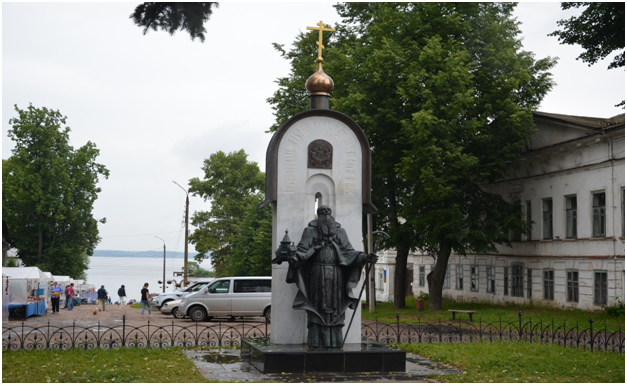
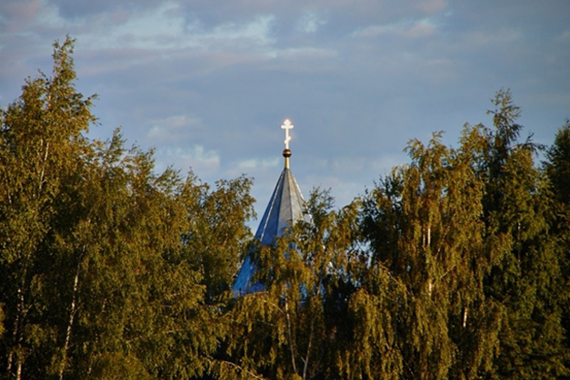
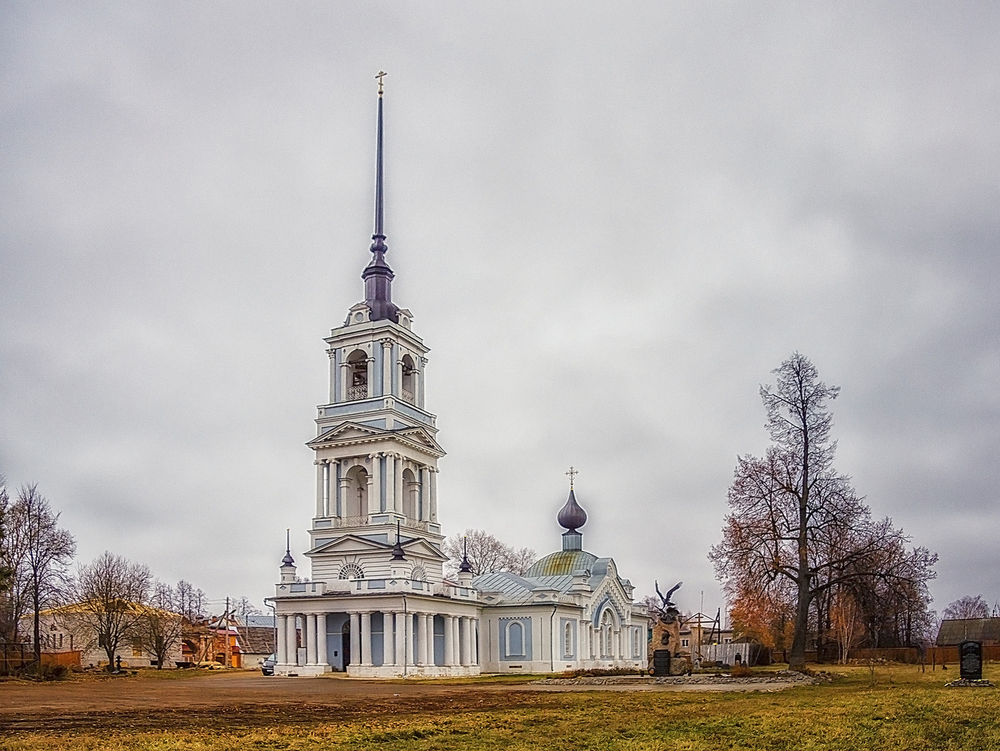
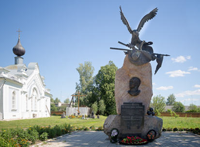
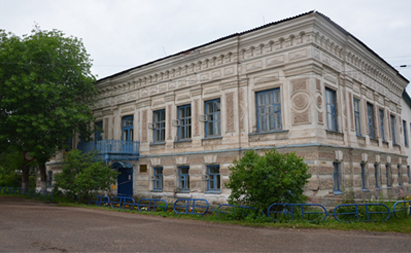
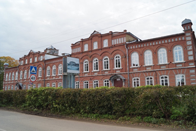
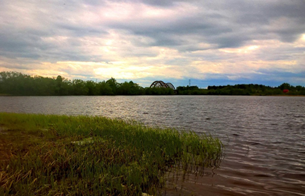

Калязин
Памятник «непотопляемости Руси»
Калязинская колокольня…
О том, как вся она белея,
Из тихих- тихих вод встает.
И облака плявут над нею
И у подножия ее.
Стоит , отражена в зеркальной,
Бездонно-синей высоте.
Как бы дивясь своей печальной,
Старинной русской красоте.
Как будто говоря:
«Глядите ж, я с вами,
Всей своей красой!»
О город Китеж,
Город Китеж
Бесстрашно вставший над водой.
О. Берггольц

Главная достопримечательность Калязина, колокольня Никольского собора (1796-1800), стала достопримечательностью после совсем не веселых событий − затопления Угличским морем большей части старого города, с торговой площадью, старинным Свято-Троицким монастырем, улицами и слободами. С колокольней, вокруг которой раньше была оживленная площадь, сейчас связаны мифы и легенды. Особенно жуткие из них касаются Второй мировой войны – рассказывают, что перед самыми страшными боями колокол начинал звонить прямо на дне. Впоследствии колокол “похоронили” под искусственной насыпью.
Памятник Макарию Калязинскому

Макарий Калязинский (в миру – Кожин Матвей Васильевич) – святой Русской церкви, почитается в лике преподобных, является основателем Троицко-Калязинского мужского монастыря. Памятник знаменитому калязинскому святителю Макарию является одной из главных достопримечательностей города. Он появился в 2008 году. Фигура Святителя Макария Калязинского установлена на фоне стилизованного элемента стены древней церкви, с узким окном-бойницей, с небольшим куполом в верхней части, что придает всему памятнику облик, схожий с часовней. В левой руке Макария можно увидеть модель монастыря, в правой – палицу монаха-странника. На стене над головой святого выбиты слова: «Святителе Отче Макарие, моли Бога о нас». Данная надпись в виде дуги огибает изображение Троицы, которое является напоминанием об основанной Макарием Троицкой обители.Сейчас на месте Троицкого монастыря виднеется одинокая часовня, построенная в 2012 году.

Церковь Вознесения Господня

Вознесенский храм в Калязине был построен в 1783 году. Изначально это была кладбищенская церковь, приписанная к Никольскому собору. Её построили тогда, когда кладбище Николаевского прихода перенесли от собора в более отдаленное от центра города место. На кладбище покоились именитые калязинцы, купцы, духовенство, интеллигенция, мещане.
Памятник князю Михаилу Васильевичу Скопину-Шуйскому

Памятник князю Михаилу Скопину-Шуйскому, предводителю русских войск в победном сражении под Калязином над литовцами в 1609 году был установлен в 2009 году южнее Вознесенского храма. На памятной табличке выбито имя предводителя русских войск, князя Скопина-Шуйского, указаны и польско-литовские военачальники - Сапега и Зборовский.
Дом купцов Ляховых.

Дом купцов Ляховых (Женская гимназия). Просторный красивый особняк на углу бывшей Московской улицы, принадлежавший калязинским купцам Ляховым, был построен в XIX веке как жилой дом. В начале XX века здание выкупила городская казна для размещения там Городской думы, а в 1908 году в нем открылась частная женская гимназия, просуществовавшая до 1918 года. В наши дни здание тоже занято учебным заведением — Калязинским педагогическим училищем.

А на улице Карла Маркса можно увидеть сразу несколько удивительных старинных зданий. Выделяется среди них бывшая городская управа. Сегодня здесь находится общеобразовательная школа.
“Горбатый” мост.

Еще одной достопримечательностью города является «Горбатый» мост. Горбатый мост через реку Жабню построен в 1935 году и соединяет две части города: старый Калязин и Заречье. При строительстве были использованы рельсы, выплавленные на сталелитейных заводах Демидова еще в 1884 году. Автомобильный проезд появился гораздо позднее.